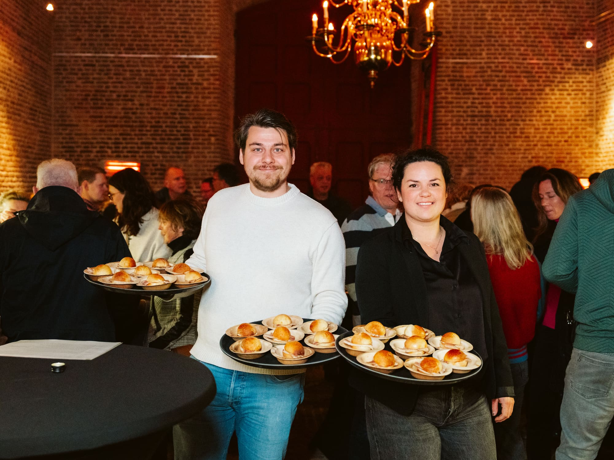

Verse vis, elke week
De kade
De vismijn ligt om de hoek en levert elke week verse vis aan. Wat er precies ligt, hangt af van de visserij.


Ambachtswinkel in Stellendam
De Ambachtswinkel staat op de buitenhaven van Stellendam, naast de vismijn. Je haalt er verse vis direct van de boot, ambachtelijke producten van Wesley en Marjoleine, en eet ze meteen op het terras met uitzicht over het water.


Haven en vuur
De vismijn staat om de hoek. De rookoven en de grill staan in de winkel. Tussen die twee in ligt alles wat wij maken: vis die over de kade komt, vlees dat over het vuur gaat, en kruiden uit de tuin erachter.


Verse vis, elke week
De vismijn ligt om de hoek en levert elke week verse vis aan. Wat er precies ligt, hangt af van de visserij.
Zelf gerookt
Wesley rookt zijn eigen zalm en paling. Langzaam, zonder kunstmatige toevoegingen, en dat proef je terug.
Verse kruiden
Marjoleine haalt de kruiden uit de eigen tuin en maakt de gerechten af. Geen poespas, wel eerlijk eten.
Wat we doen
Je komt langs voor een afhaalmaaltijd, je viert er iets, of je zit er een dagdeel met je team. Voor alle drie kom je naar dezelfde plek: de buitenhaven van Stellendam.


Van de kaart
Een klein deel van wat er elke week ligt. De rest verschilt met de vismijn en met wat er op de grill gebeurt.
Elke week vers aangeleverd uit de vismijn. Wat er ligt, hangt af van de visserij.
Gebakken vis met bijbehorende sauzen.
Langzaam gerookt, zonder kunstmatige toevoegingen. Plakken voor thuis of voor de borrel.
Uit de eigen rookoven. Filet voor thuis of voor de borrel.
Met het brood van Bakkerij van Harberden. Gerookte zalm, paling, pulled pork of ambachtelijke worst.
Voor de barbecue
Twee pakketten, allebei met vijf of meer soorten vlees van eigen huis. Kok en bediening kunnen wij regelen.
€ 9,95p.p.
Vijf soorten vlees voor de barbecue, voor iedereen.
€ 13,95p.p.
Uit te breiden met een chef op locatie. Maximaal vijf personen.
Zo werkt het
Drie stappen, en je weet waar je aan begint.
Hoe uitgebreider je vraag, hoe gerichter ons antwoord.
We vragen door tot we weten wat je wilt en hoeveel mensen er komen.
Inclusief wat we doen, in welke volgorde en wat het kost.
Over ons
Geen poespas, wél eerlijk: gegrild en gerookt vlees en vis, zonder E-nummers, met verse kruiden uit de eigen tuin.
Wesley
Wesley staat achter de grill en de rookoven. Hij bepaalt het vuur, de temperatuur en het moment waarop het vlees klaar is.

Marjoleine
Marjoleine stuurt de smaken aan met verse kruiden uit de eigen tuin. Zij maakt de gerechten af en houdt de presentatie bij.
Klanten
Afgelopen weekend een catering bij Wesley laten bezorgen, top kwaliteit eten goed verzorgd en meer dan voldoende als je per persoon bestelt.
Wat je hier ook haalt, het is een feestje. Je proeft de liefde en ambacht. Heerlijk eten en uitstekende waarde.
Helemaal top! Zowel de koudgerookte zalm als de grillworst (naturel) smaakten meer dan prima. Dikke aanrader.
Heerlijke, eerlijke producten zonder toevoegingen en E-nummers.
Het ambacht in actie. Nieuwe specialiteiten, de vismijn en wat er op de grill gebeurt.


Vertel ons wat je viert en hoeveel mensen er komen. Wij maken een offerte met een vaste prijs en zorgen voor het vuur.